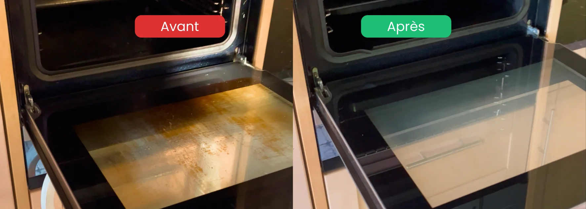

- Principe : un grand ménage annuel plus profond que l'entretien courant
- Méthode : pièce par pièce, du haut vers le bas, du fond vers la sortie
- Première étape : désencombrer avant de nettoyer
- Zones oubliées : luminaires, plinthes, derrière les meubles, textiles
- Durée : 1 à 2 journées pour un logement complet selon la surface
Pourquoi faire un nettoyage de printemps
L'entretien quotidien garde un logement propre en surface, mais certaines zones s'encrassent lentement au fil des mois sans qu'on le remarque. Le nettoyage de printemps sert à traiter tout ce que la routine laisse de côté.
Trois bénéfices concrets :
- Un air plus sain : on retire la poussière accumulée dans les textiles, les filtres et les recoins, ce qui réduit les allergènes
- Un logement qui dure : entretenir en profondeur préserve les surfaces, les sols et les appareils
- Un effet psychologique réel : un intérieur désencombré et propre apporte une sensation de renouveau
Par où commencer : la règle d'or
Avant de sortir les produits, deux principes font gagner un temps considérable.
Un grand ménage en profondeur sans y passer votre week-end
Devis gratuit sous 24h · Sans engagement
Demander un devis gratuit →1. Désencombrer avant de nettoyer
Nettoyer autour du désordre est inefficace. Commencez par trier et ranger chaque pièce : ce qui se garde, ce qui se donne, ce qui se jette. Un espace dégagé se nettoie deux fois plus vite.
2. Travailler du haut vers le bas
Toujours nettoyer dans cet ordre : plafond et luminaires, puis murs et meubles, puis sols en dernier. La poussière tombe vers le bas : inutile de laver le sol avant d'avoir dépoussiéré les étagères.
Le nettoyage de printemps pièce par pièce
Voici la check-list des points à traiter dans chaque pièce, au-delà du ménage habituel.
Cuisine
- Dégraisser la hotte et son filtre
- Nettoyer l'intérieur du four et du réfrigérateur
- Détartrer l'évier et la robinetterie
- Vider et nettoyer l'intérieur des placards
- Dégivrer le congélateur si nécessaire
Salle de bain
- Détartrer en profondeur douche, robinets et pommeau
- Traiter les joints de silicone (moisissures)
- Nettoyer l'armoire de toilette et trier les produits périmés
- Laver les rideaux de douche ou détartrer la paroi vitrée
Chambres
- Retourner et aérer le matelas
- Laver couettes, oreillers et housses
- Dépoussiérer le sommier et le dessous du lit
- Trier les armoires et penderies
Salon et pièces à vivre
- Aspirer le canapé, y compris sous les coussins
- Dépoussiérer les luminaires et abat-jours
- Nettoyer les vitres intérieures et extérieures
- Laver les rideaux et voilages

Les zones que tout le monde oublie
Ce sont précisément ces endroits qui font la différence entre un ménage courant et un vrai nettoyage de printemps :
- Luminaires et plafonniers : la poussière s'y accumule et ternit la lumière
- Plinthes et moulures : couche de poussière grasse souvent ignorée
- Derrière et sous les meubles : réfrigérateur, canapé, armoires
- Interrupteurs et poignées de porte : zones très touchées, rarement nettoyées
- Filtres : hotte, sèche-linge, aspirateur, ventilation
- Textiles : rideaux, tapis, coussins, qui retiennent poussière et odeurs
- Radiateurs : entre les éléments, là où la poussière brûle et sent
Comment organiser son nettoyage de printemps
Pour ne pas se décourager, mieux vaut planifier que tout faire d'un coup.
- En une journée : idéal pour les petits logements, une session intensive pièce par pièce
- Sur un week-end : pour les logements moyens, une demi-journée par zone
- Étalé sur la semaine : grands logements ou emploi du temps chargé, une pièce par jour
- Délégué à un professionnel : pour un résultat impeccable sans y consacrer son week-end
FAQ – Nettoyage de printemps
Quand faut-il faire son nettoyage de printemps ?
Idéalement entre mars et mai, dès que le climat permet d'aérer pendant le nettoyage. La lumière naturelle plus intense de cette période révèle aussi la poussière et les traces accumulées durant l'hiver, ce qui aide à ne rien oublier.
Par quelle pièce commencer un grand ménage de printemps ?
Commencez par la pièce la plus encombrée ou la plus utilisée, souvent la cuisine ou le salon. Traitez une pièce entièrement avant de passer à la suivante. Dans chaque pièce, nettoyez du haut vers le bas pour ne pas redéposer de poussière sur les surfaces déjà propres.
Combien de temps prend un nettoyage de printemps complet ?
Pour un appartement de taille moyenne, comptez 1 à 2 journées en travaillant méthodiquement. Pour une maison, il est souvent plus réaliste d'étaler le travail sur plusieurs jours, à raison d'une pièce ou d'une zone par session.
Quels produits utiliser pour un nettoyage en profondeur ?
Pour l'essentiel, des produits polyvalents et écologiques suffisent : vinaigre blanc pour le calcaire léger, bicarbonate pour désodoriser, savon noir pour les sols. Pour le calcaire incrusté ou les surfaces très encrassées, des produits spécifiques adaptés à chaque matériau sont nécessaires.
Faut-il faire un nettoyage de printemps chaque année ?
Oui, un grand ménage annuel complète utilement l'entretien courant. Il permet de traiter les zones oubliées, de préserver les surfaces et les appareils sur le long terme, et d'assainir l'air intérieur en retirant la poussière accumulée dans les textiles et les filtres.
En résumé
Le nettoyage de printemps est un grand ménage annuel qui traite tout ce que la routine laisse de côté. La méthode efficace tient en trois principes : désencombrer d'abord, travailler du haut vers le bas, et avancer pièce par pièce. En y consacrant une à deux journées et en n'oubliant pas les zones cachées (luminaires, plinthes, textiles, filtres), vous obtenez un intérieur réellement sain et un vrai sentiment de renouveau.